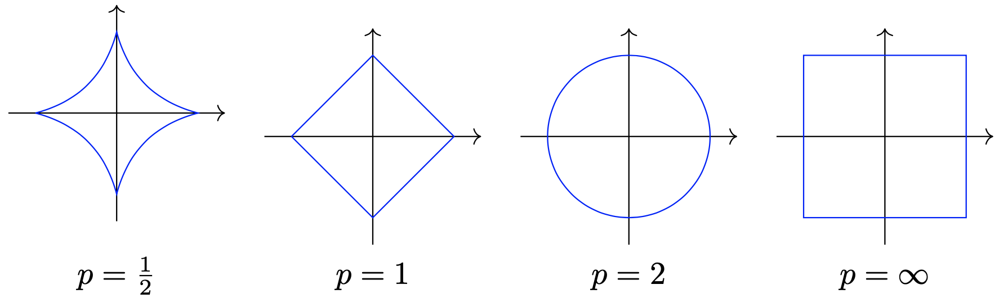
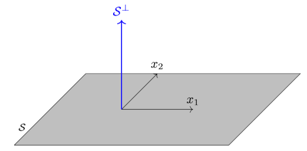

Espaces Vectoriels#
Dans toute la suite, on s’intéresse à la notion d’espace vectoriel sur le corps \(\mathbb R\) des réels.
Définition#
Definition 1 (Espace vectoriel)
Un \(\mathbb R\)-espace vectoriel \(E\) est un ensemble non vide muni : :
d’une loi de composition interne notée “+” qui à \({\bf x}, {\bf y}\in E\) associe \({\bf x}+ {\bf y}\in E\)
d’une loi de composition externe, notée “.”, qui à \(\lambda\in\), \({\bf x}\in E\) associe \(\lambda. {\bf x}\in E\)
qui vérifie les propriétés suivantes :
\((\forall {\bf x}, {\bf y}\in E)\quad {\bf x}+ {\bf y} = {\bf y} + {\bf x}\) [symétrie]
\((\forall {\bf x}, {\bf y}, {\bf z}\in E)\quad {\bf x}+( {\bf y}+ {\bf z})= ( {\bf x}+ {\bf y}) + {\bf z}\) [associativité]
\((\exists {\bf 0}\in E), (\forall {\bf x}\in E) \quad {\bf x}+ {\bf 0} = {\bf x}\) [élément neutre ou vecteur nul de \(E\)]
\((\forall {\bf x}\in E) (\exists \textbf{x'}\in E), {\bf x} + \textbf{x'} = {\bf 0}\) [opposé]
\((\forall {\bf x}\in E), 1. {\bf x} = {\bf x}\) [élément neutre]
\((\forall \lambda,\mu\in \mathbb{R})(\forall {\bf x}\in E), \lambda.(\mu. {\bf x}) = (\lambda\mu). {\bf x}\)
\((\forall \lambda,\in \mathbb{R})(\forall {\bf x}, {\bf y}\in E), \lambda.( {\bf x} + {\bf y}) = \lambda. {\bf x} + \lambda. {\bf y}\) [Distributivité de “.” sur “+”]
\((\forall \lambda,\mu\in \mathbb{R})(\forall {\bf x}\in E), (\lambda + \mu). {\bf x} = \lambda. {\bf x} + \mu. {\bf x}\) [Distributivité de “+” sur “.”]
Les éléments de \(E\) sont des vecteurs
Definition 2 (Produit scalaire)
Un produit scalaire sur un espace vectoriel \(E\) est une application \(<\cdot,\cdot>\) de \(E\times E\) dans \(\mathbb R\) qui vérifie les propriétés suivantes :
Pour tout \({\bf y}\in E\) l’application \({\bf x}\rightarrow <{\bf x},{\bf y}>\) est linéaire
\((\forall {\bf x},{\bf y}\in E)\ <{\bf x},{\bf y}>=<{\bf y},{\bf x}>\)
\((\forall {\bf x}\in E)\ <{\bf x},{\bf x}>\geq 0\)
\((\forall {\bf x}\in E)\ <{\bf x},{\bf x}>= 0\Leftrightarrow {\bf x}= {\bf 0}\)
\(E\) muni du produit scalaire définit un espace préhilbertien. Si \(E\) est de dimension finie, c’est même un espace euclidien.
Definition 3 (Norme vectorielle)
Une norme vectorielle est une fonction notée \(\|.\|\) définie sur un espace vectoriel \(E\) et satisfaisant aux trois axiomes suivants :
\((\forall {\bf x}\in E)\ \|{\bf x}\|\geq 0\) et \(\|{\bf x}\|= 0 \Leftrightarrow {\bf x}={\bf 0}\)
\((\forall {\bf x}\in E)\ (\forall\lambda \in \mathbb R)\ \|\lambda.{\bf x}\|=|\lambda|\|{\bf x}\|\)
\((\forall {\bf x},{\bf y}\in E)\ \|{\bf x+y}\|\leq \|{\bf x}\|+\|{\bf y}\|\)
Property 1 (Inégalité de Cauchy-Schwarz)
\((\forall {\bf x,y}\in\mathbb R^n)\ {\bf x^\top}{\bf y}\le \|{\bf x}\|_2 \|{\bf y}\|_2\)
et l’égalité est vérifiée si et seulement si \({\bf x}\) et \({\bf y}\) sont colinéaires.
L’inégalté triangulaire est un résultat important de l’analyse fonctionnelle dû à Minkowski et sa démonstration découle de l’inégalité fondamentale suivante dite inégalité de Hölder :
Property 2 (Inégalité de Hölder)
\( (\forall {\bf x,y}\in\mathbb R^n)\ (\forall p,q>1\ /\ \frac{1}{p}+\frac{1}{q}=1)\)
\(\displaystyle\sum_{i=1}^n|x_iy_i|\leq \|{\bf x}\|_p\|{\bf y}\|_q. \)
On observera également que dans \(\mathbb R^n\) (et plus généralement dans tout espace vectoriel de dimension finie), toutes les normes sont équivalente dans le sens où, pour deux normes \(\|.\|_a\) et \(\|.\|_b\), il existe deux constantes positives \(\alpha\) et \(\beta\) satisfaisant
\((\forall {\bf x}\in \mathbb R^n)\ \alpha\|{\bf x}\|_a\leq \|{\bf x}\|_b\leq \beta\|{\bf x}\|_a.\)
Sous-espace vectoriel#
Definition 4 (Sous-espace vectoriel)
Soit \(E\) un espace vectoriel. Une partie \(F\) de \(E\) est un sous-espace vectoriel si :
\({\bf 0}\in F\)
\((\forall {\bf x},{\bf y}\in F)(\forall \lambda\in\mathbb R)\quad ({\bf x}+\lambda.{\bf y})\in F\)
Tout sous-espace vectoriel d’un -espace vectoriel \(E\) est un espace vectoriel pour les lois “+” et “.” induites par \(E\) . Soient maintenant \(F\) et \(G\) deux sous-espaces vectoriels de \(E\). Alors :
\(F\cap G\) est un sous-espace vectoriel de \(E\).
\(F+G = \{{\bf z}\in E\mid{\bf z} = {\bf x} + {\bf y}, {\bf x}\in F, {\bf y}\in G\}\) est un sous-espace vectoriel de \(E\).
si \(F\cap G=\emptyset\) et \(F+G=E\), alors \(F\) et \(G\) sont dits supplémentaires.
Exemples fondamentaux#
Nous utiliserons dans ce cours deux espaces vectoriels fondamentaux.
Le \(\mathbb{R}\)-espace vectoriel \(\mathbb R^n\)#
\(\mathbb R^n\), \(n\ge 1\), est l’espace des vecteurs à \(n\) composantes
réelles. On note
\({\bf x}=\left(\begin{array}{c}x_1\\ \vdots\\ x_n\end{array}\right)\in\mathbb R^n\)
le vecteur de composantes \(x_i\in \mathbb R\), \(i\in[\![1,n]\!]\).
\(\mathbb R^n\) a une structure d’espace vectoriel pour les lois “+” et “.”
définies par :
\((\forall {\bf x}, {\bf y}\in \mathbb R^n) \quad {\bf x}+ {\bf y} =\left(\begin{array}{c}x_1+y_1\\ \vdots\\ x_n+y_n\end{array}\right)\)
\((\forall \lambda\in\mathbb R)(\forall {\bf x}\in \mathbb R^n)\quad \lambda. {\bf x}=\left(\begin{array}{c}\lambda x_1\\ \vdots\\ \lambda x_n\end{array}\right)\)
On munit \(\mathbb R^n\) du produit scalaire canonique, noté \({\bf x}^\top {\bf y}\) et défini par :
\(\begin{aligned} \cdot^\top\cdot : \mathbb R^n\times \mathbb R^n &\rightarrow& \mathbb R\\ {\bf x},{\bf y} &\mapsto&{\bf x}^\top {\bf y}=x_1y_1+\cdots+x_ny_n = \displaystyle\sum_{i=1}^n x_iy_i\end{aligned}\)
Pour \({\bf x}\), \({\bf y}\) et \({\bf z}\) des vecteurs de \(\mathbb R^n\) et \(\alpha\in\mathbb R\) on a de plus les propriétés suivantes :
\({\bf x}^\top {\bf 0}= {\bf 0}\)
\({\bf x}^\top ( {\bf y}+ {\bf z})= {\bf x}^\top {\bf y}+ {\bf x}^\top {\bf z}\)
\((\alpha {\bf x})^\top {\bf y}=\alpha ( {\bf x}^\top {\bf y})\)
En utilisant ce produit scalaire, on définit alors par exemple les normes suivantes :
\(\|{\bf x}\|_1=\displaystyle\sum_{i=1}^n|x_i|\) est la norme \(L_1\) (ou city block).
\(\|{\bf x}\|_2=\left ( {\bf x}^\top {\bf x}\right )^\frac{1}{2}=\sqrt{\displaystyle\sum_{i=1}^nx_i^2}\) est la norme \(L_2\) (ou norme euclidienne).
\(\|{\bf x}\|_\infty = \displaystyle\max_{1\leq i\leq n}\{|x_i|\}\) est la norme du max (ou norme de Tchebychev, ou norme \(L_\infty\))
Les trois normes de l’exemple sont des cas particuliers des normes \(L_p\) : \(\|{\bf x}\|_p=\left (\displaystyle\sum_{i=1}^n|x_i|^p\right ) ^\frac{1}{p}\)
La figure suivante présente les boules unité (i.e. le lieu des vecteurs de norme 1) pour différentes valeurs de \(p\).
En Python
import matplotlib.pyplot as plt
import numpy as np
u = np.array([2, 5])
v = np.array([3, 1])
vp = 0.5*v
def plot_vector2d(vector2d, origin=[0, 0], **options):
return plt.arrow(origin[0], origin[1], vector2d[0], vector2d[1],
head_width=0.2, head_length=0.3, length_includes_head=True,
**options)
plt.figure(figsize=(5,5))
plot_vector2d(u, color="r")
plot_vector2d(v, color="b",linestyle="dotted")
plot_vector2d(vp, color="b")
plot_vector2d(v, origin=u, color="b", linestyle="dotted")
plot_vector2d(vp, origin=u, color="b", linestyle="dotted")
plot_vector2d(u, origin=v, color="r", linestyle="dotted")
plot_vector2d(u+vp, color="g")
plt.axis([0, 9, 0, 7])
plt.text(0.7, 3, "u", color="r", fontsize=18)
plt.text(4, 3, "u", color="r", fontsize=18)
plt.text(3, 0.6, "v", color="b", fontsize=18)
plt.text(1.5, 0.2, "vp", color="b", fontsize=18)
plt.text(5, 6.2, "v", color="b", fontsize=18)
plt.text(3.1, 5.6, "0.5*v", color="b", fontsize=18)
plt.text(2, 2.8, "u+0.5*v", color="g", fontsize=18)
plt.grid()
plt.show()
Definition 5 (Orthogonalité)
On dit que deux vecteurs \({\bf x}\) et \({\bf y}\) de \(\mathbb R^n\) sont orthogonaux si \({\bf x}^\top {\bf y}=0\).
Definition 6 (Orthogonal d’un ensemble de vecteurs)
Soit \(\mathcal{S}\) un sous-ensemble de vecteurs de \(\mathbb{R}^n\). L’orthogonal de \(\mathcal{S}\) est est un , noté \(S^\perp\), composé des vecteurs orthogonaux à tous les vecteurs de \(\mathcal{S}\), i.e. \(\mathcal{S}^\perp=\left\{ {\bf x}\in\mathbb R^n\ \mid\ (\forall {\bf s}\in \mathcal{S}){\bf x}^\top{\bf s}=0 \right\}.\)
Soit par exemple \(\mathcal{S} = \left \{ {\bf x}\in \mathbb R^3\ \mid\ x_3=0\right \}\). Alors \(\mathcal{S}^\perp\) est l’axe \(x_3\).
Le \(\mathbb{R}\)-espace vectoriel \(\mathcal{M}_{m,n}(\mathbb{R})\)#
L’ensemble \(\mathcal{M}_{m,n}(\mathbb{R})\) des matrices à \(m\) lignes et \(n\) colonnes, à coefficients dans \(\mathbb R\) est un espace vectoriel pour les lois “+” et “.” définies par :
\((\forall {\bf A}, {\bf B}\in \mathcal{M}_{m,n}(\mathbb{R}))(\forall i\in [\![ 1, m]\!])(\forall j\in [\![ 1, n]\!])\quad \left ( {\bf A}+ {\bf B}\right )_{i,j} =\left ( {\bf A}\right )_{i,j} + \left ( {\bf B}\right )_{i,j}\)
\((\forall \lambda\in\mathbb R)(\forall {\bf A}\in \mathcal{M}_{m,n}(\mathbb{R}))(\forall i\in [\![ 1, m]\!])(\forall j\in [\![ 1, n]\!])\quad \left ( {\bf \lambda.A}\right )_{i,j} =\lambda\left ( {\bf A}\right )_{i,j}\)
Sur l’espace des matrices carrées \(\mathcal{M}_n(\mathbb R)\), on définit des normes matricielles. En plus des trois axiomes des normes vectorielles, on exige que ces normes vérifient une condition supplémentaire, dite condition de norme {sous-multiplicative} :
\((\forall{\bf A},{\bf B}\in\mathcal{M}_n(\mathbb R))\quad \|{\bf AB}\|\leq \|{\bf A}\|\|{\bf B}\|\)
Famille libre, génératrice, base#
Definition 7 (Combinaison linéaire)
Soient \(\bf{x_1}\cdots {\bf x_p}\) \(p\) vecteurs de \(E\).
Tout vecteur de la forme \({\bf y} = \displaystyle\sum_{i=1}^p \lambda_i {\bf x_i},\quad \lambda_1\cdots \lambda_p \in \mathbb R\) est appelé combinaison linéaire des vecteurs \(\bf{x_i}\)
Definition 8 (Famille libre)
Une famille \(\mathcal{F} = (\bf{x_1}\cdots {\bf x_p})\) de \(p\) vecteurs de \(E\) est libre (ou indépendante) si et seulement si \(\displaystyle\sum_{i=1}^p \lambda_i {\bf x_i} = 0 \Leftrightarrow (\forall i\in \ [\![ 1, p]\!]) \textrm{ }\lambda_i=0\)
Dans le cas où la combinaison linéaire nulle amène un ou plusieurs coefficients non nuls, la famille est liée. Une famille est donc liée si et seulement si au moins un des vecteurs de la famille est combinaison linéaire des autres.
Definition 9 (Famille génératrice)
Soit une famille \(\mathcal{F} = (\bf{x_1}\cdots {\bf x_p})\) de \(p\) vecteurs de \(E\). \(\mathcal{F}\) est génératrice de \(E\) si : \((\forall {\bf x}\in E) (\exists \lambda_1\cdots \lambda_p\in \mathbb R) \quad {\bf x} = \displaystyle\sum_{i=1}^p \lambda_i {\bf x_i}\)
Cette notion est liée à la notion de sous-espace vectoriel engendré.
Definition 10 (Sous-espace engendré)
L’ensemble de toutes les combinaisons linéaires d’un ensemble \(\mathcal{F}\) de vecteurs de \(E\) est le sous-espace engendré par \(\mathcal{F}\), noté \(\mathrm{lin}\{\mathcal{F}\}\) : \(\mathrm{lin}\{\mathcal{F}\}=\left\{{\bf x}\in E \mid {\bf x}=\alpha_1{\bf x_1}+\cdots+\alpha_p {\bf x_p},\ \alpha_i\in\mathbb R,\ {\bf x_i}\in \mathcal{F},\ \forall i\in [\![1,p]\!] \right\}.\)
On vérifie facilement que \(\mathrm{lin}\{\mathcal{F}\}\) est bien un sous-espace vectoriel de \(E\).
Definition 11 (Base)
Une famille \(\mathcal{B} = (\bf{x_1}\cdots {\bf x_p})\) de \(p\) vecteurs de \(E\) est une base de \(E\) si elle est libre et génératrice.
Dans le cas où \(E=\mathbb R^n\), un exemple important de base est la base dite canonique.
Definition 12 (Base canonique)
On appelle base canonique de \(\mathbb R^n\) l’ensemble des vecteurs \({\bf e_i}\), \(i\in[\![1,n]\!]\), dont les composantes sont toutes nulles sauf la \(i\)–ème qui vaut 1.
Les éléments de la base canonique sont aussi appelés vecteurs unitaires. Tout vecteur de \(\mathbb R^n\) peut donc s’écrire de manière unique comme une combinaison linéaire des vecteurs de la base canonique, i.e. \({\bf x}=x_1{\bf e_1}+\cdots+x_n{\bf e_n} = \displaystyle\sum_{i=1}^n x_i {\bf e_i} =\displaystyle\sum_{i=1}^n ({\bf x^\top e_i} ){\bf e_i}\) les \(x_i\) sont les coordonnées de \({\bf x}\) dans la base. On peut montrer que tout espace vectoriel admettant une famille finie génératrice admet une base et que, plus généralement :
Theorem 1 (Théorème de la base incomplète)
Soit \(E\) un espace vectoriel admettant une famille génératrice. Alors :
Toute famille libre de \(E\) peut être complétée en une base
De toute famille génératrice, on peut extraire une base de \(E\).
De la notion de base on en déduit la définition de la dimension d’un espace vectoriel.
Definition 13 (Dimension)
La dimension d’un espace vectoriel \(E\), notée \(dim(E)\), est le nombre d’éléments d’une base de \(E\).
Du théorème de la base incomplète, on en déduit qu’une famille génératrice de \(E\) a un nombre de vecteurs supérieur ou égal à la dimension de \(E\), tandis qu’une famille libre a un nombre de vecteurs inférieur ou égal à la dimension de \(E\). On en déduit également :
Property 3
Soit \(\mathcal{F}\) une famille de \(p\) vecteurs dans un espace vectoriel \(E\) de dimension \(dim(E)>p\). Alors \(\mathcal{F}\) est liée.
Tous sous-espaces vectoriels \(F,G\) d’un espace vectoriel \(E\) sont enfin tels que :
\(dim(F)\leq dim(E)\)
\(F=E \Leftrightarrow dim(F)=dim(E)\)
si \(G\subset F\) alors \(F=G\Leftrightarrow dim(F)=dim(G)\)